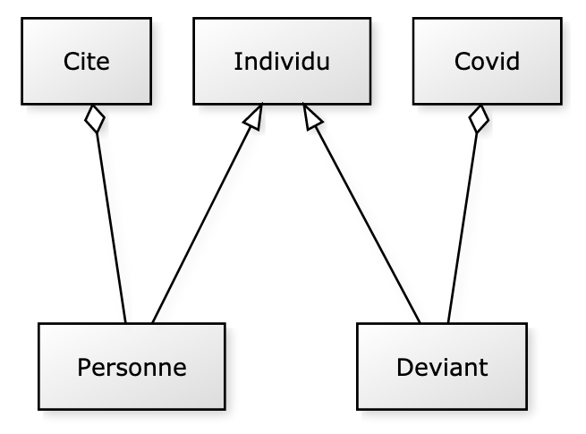

Voici votre examen de C++ ZZ2. Lisez tout le sujet avant de commencer : un certain nombre de tests ont été écrits pour être indépendants ou avec peu d'influence sur les autres.
À la fin de l'examen, vous devez rendre un programme qui compile.
Pour plus de simplicité, vous DEVEZ utiliser trois fichiers en plus de main.cpp : tests.cpp, deviant.hpp et deviant.cpp. Ne changez pas la casse et n'ajoutez pas de fichiers, cela casserait la chaine de compilation et engendrerait une note nulle.
Toutes les déclarations seront dans l'entête, les définitions/implémentations seront dans le cpp.
La ligne de compilation est la suivante :
make
Si besoin, vous pouvez faire un make clean. La première compilation de la bibliothèque Catch est un peu longue.
Ne jamais recommenter un test qui a réussi. Tous les tests décommentés doivent compiler dans le même temps (sauf mention contraire).
Pour garder une trace exécutable de votre programme sans stress supplémentaire :
Le monde vit des temps difficiles. La population s'est réfugiée dans des cités pour se protéger des déviants, qui, quand ils sont attrapés sont placés dans des centres d'observation en attendant qu'ils soient soignés.
Personne qui propose un attribut nom [Personne1, Personne2] et un constructeur par défaut [Personne3]Individu. Les instances bénéficient d'un attribut id incrémenté automatiquement à chaque construction. Une méthode de classe est définie pour aider à compter :-) [Individu1]Individu d'une méthode pour afficher un objet dans un flux [Individu2]Personne est en fait un Individu [Personne4] avec la bonne méthode afficher() [Personne5]Individu et de Personne disposent de l'opérateur << [Individu3, Personne6]Individu et Personne proposent une méthode getType à valeur dans l'enum class définie dans le fichier d'entête donné [Type1, Type2]Individu, cela génère une exception - personnalisée ou pas [Exception, ExceptionType]Cite. Pour cet exercice, il n'y a qu'une seule cité que vous pouvez définir comme une variable globale ou comme une instance de classe de Cite.Personne est instanciée, elle est ajoutée à la cité [Ville1, Ville2]. On vous conseille un conteneur de pointeurs :-)Deviant est également un Individu avec le bon type [Type3]Le conseil de la cité a été durement touché donc il n'est plus en mesure de vous proposer la suite de l'exercice mais sachez qu'un traitement a été trouvé pour soigner les déviants : des biZZous en musique par Porry et Salesses - dans le respect des gestes barrières bien sûr, mais on s'égare.............
Préparation du compte (1 fois, au début) :
git config --global user.name "un_nom"
git config --global user.email "un_mail"
Préparation du répertoire :
git init
À chaque nouveau fichier:
git add fichier
git add *
Sauvegarder / Committer :
git commit -am "commentaire"
git log permet d'avoir la liste des sauvegardes avec un numéro de hachage
Pour revenir en arrière :
git checkout numero_de_hash
OU git revert numero_de_hash